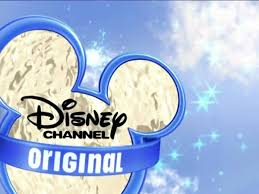
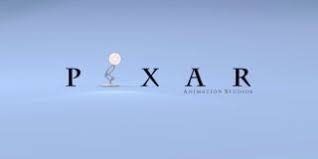
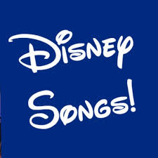

Early Pixar Films
Pixar started as apart of the Computer Division of Lucasfilm as The Graphics Group in 1979. In 1986, Steve Jobs purchased it for $5 million and then Walt Disney aquuired it in 2006 at $7.4 billion.The first feature film was Toy Story, released in 1995, this was known as the best first-length feature film that was made in CGI animation format ever.Pixar film's multiple movies in the top 50 highest-grossing animated films of all time. Pixar's films have also been nominated for the Academy Award for the Best Animated Feature and have three films for the Academy Award for Best Picture. Ten films won an Academy Award.
| Toy Story | Bugs Life |
| Monsters Inc. | The Incredibles |
 Finding Nemo Finding Nemo |
Pixar Characters |
Disney Channel Shows
Disney has produced the best television back in the day. The shows they come out with today, are just not the same. Everyone that has grown up watching their shows want their favorite shows back. Visit this page to see the best Disney Shows.
 Learn More...DCOMS
DCOMS stand for Disney Channel Original Movies. Disney usually produces at least one movie a year. Click the Learn More button to learn about the best DCOMS.
 Learn More...
Learn More...
Pixar Films
Pixar Animation Moviews owned by Walt Disney Studio Group. The animation studio has produced over 23 feature films. Click the learn more button to learn about the best films produced by Pixar.
 Learn More...Songs
Whether it was in Disney Channel Shows, or, Pixar Films, DCOMS, Disney has produceed the best music. Disney sometimes signed their actors to their music company, Walt Disney Records, to release their music and pay for their music videos. Click the learn button to learn about Disney's best music.
 Learn More...